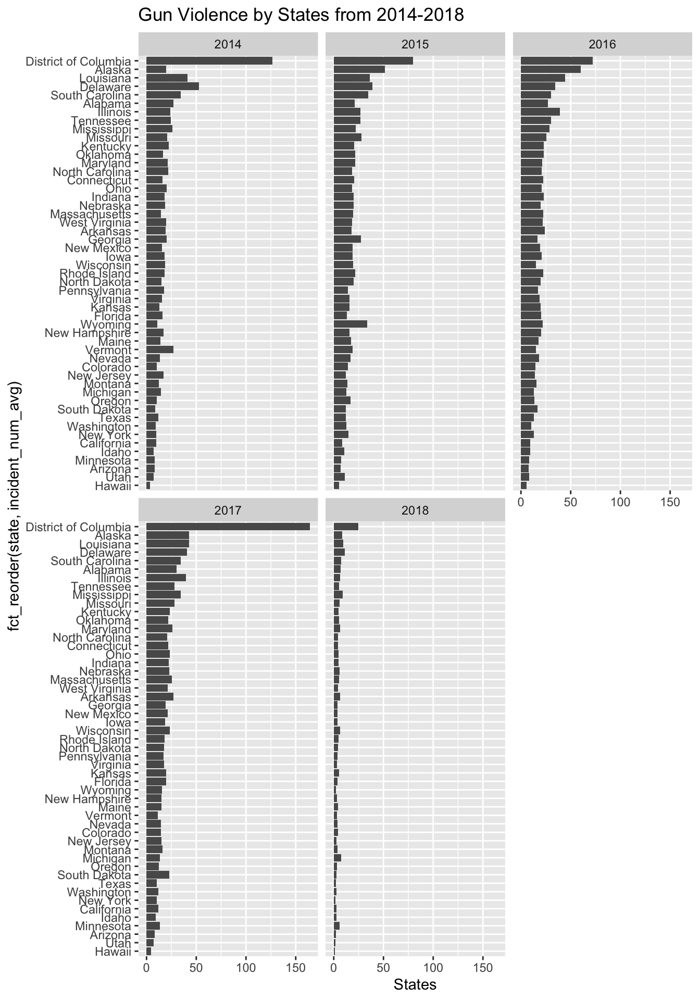
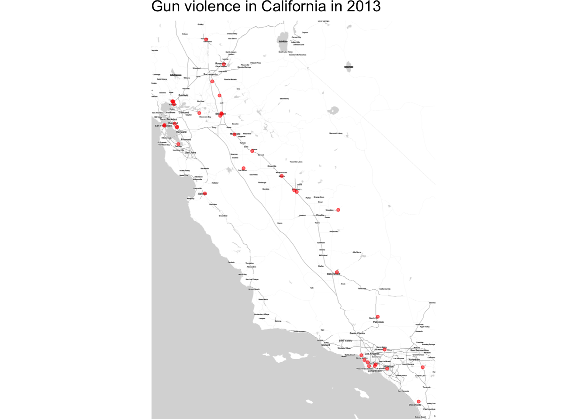

Chapter 5 Results
5.1 Exploring the Gun Violence Data
We start from an interesting question: Where is the least gun threaded state in the US? Then we would like explore the gun violence data, hoping to find the answers from sub questions.
5.1.1 How many people are injured in gun violence every year every state?
Number of Gun Violence Incidents by States facet by years
gun_vio_states<-gun_vio%>%
group_by(state,year)%>%
summarize(incident_number=n())
gun_vio_states<-as.data.frame(gun_vio_states)
gun_vio_adjust = merge(gun_vio_states,population, by.x=c("state", "year"), by.y=c("state", "year"))
gun_vio_adjust["incident_num_avg"]<-gun_vio_adjust$incident_number/gun_vio_adjust$population*100000
gun_vio_adjust<-select(gun_vio_adjust,1,2,5)
ggplot(gun_vio_adjust,aes(x= fct_reorder(state, incident_num_avg) ,y=incident_num_avg))+
geom_bar(position = "dodge", stat = "identity")+
facet_wrap(~year)+
coord_flip()+
ggtitle("Gun Violence by States from 2014-2018")+
labs(y="States")
5.1.2 Where does these gun violence happen?
Then, we zoomed the map to find the exact location of each gun incident. We ploted each event as a red dot on the map. The following plot shows the gun violence in California in 2013,
qmplot(lon,lat,data=data_new,colour=I("red"),zoom=9,size = I(0.9),alpha=.3,maptype = "toner-lite",main = "Gun violence in California in 2013")+
theme(legend.position="none")## Map tiles by Stamen Design, under CC BY 3.0. Data by OpenStreetMap, under ODbL.## 117 tiles needed, this may take a while (try a smaller zoom).## Warning: Removed 1 rows containing missing values (geom_point).
As we could see from this plot, the gun violence incident is clustered at cities and roads, which means that gun violences is mostly happen where people are.
5.1.3 Is the violence rate stable?
5.2 Effects of Gun Possesion
Since the numbers of firearm possesions are different among states, it might have something to do with the gun violence.
5.2.1 How does the gun change rate influence the gun violence status?
5.3 Effects of GDP data
We also would like to find whether there is something to do with the ecnomic situation. We used GDP of each state to represent the economic situation.